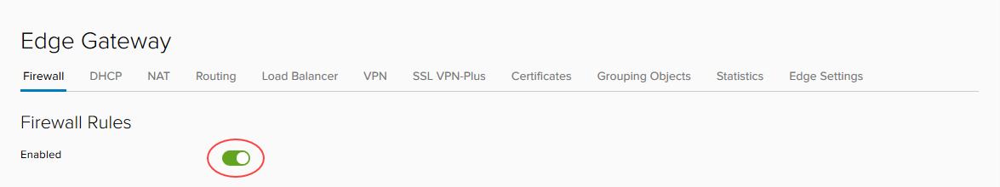
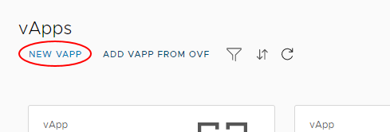

How to build a virtual machine with UKCloud for VMware
Overview
This guide leads you through the three basic steps for using UKCloud for VMware to quickly build a simple virtual machine (VM) in vCloud Director, and connect it to the internet.
For more information about how to use other vCloud Director functions to make the most of UKCloud for VMware and create more complex virtual data centres (VDCs), take a look at the Getting Started Guide for UKCloud for VMware.
The three steps covered in this guide are:
- Create a network (to move requests around your VMs)
- Configure the edge gateway (in this guide we focus on the firewall and NAT configuration)
- Create a virtual machine
If you follow these steps, you can have a VM up and running with a connection to the internet in about 20 to 25 minutes.
Before you begin
You should have received your UKCloud Portal login credentials from your Portal administrator.
You should have created a compute service and VDC within your account. For more information, see the Getting Started Guide for UKCloud for VMware.
You should also have created an edge gateway, which enables communication between your VDC and the outside world. For more information, see How to build an edge gateway using the UKCloud Portal. The steps in this guide assume that you've converted your edge gateway to an advanced edge. For more information, see How to convert your edge to an advanced gateway.
Create a network
Before you can start building VMs in your VDC, you need to create the network that connects the VMs to each other and the outside world.
First, you need to create a network that can connect to external networks outside your VDC (including the internet). This is called an external routed network. You can find more information about routed networks in How to create a routed VDC network.
Log in to the UKCloud Portal.
For more detailed instructions, see the Getting Started Guide for the UKCloud Portal
Select your account.
In the Portal navigation panel, expand VMware Cloud and then select the compute service in which you want to create your VM.
Tip
If you haven't created a compute service yet, see the Getting Started Guide for UKCloud for VMware.
On the vCloud Director tab, enter your Portal password and click Confirm.

In the vCloud Director Virtual Datacenters dashboard, select your VDC.
Tip
If you haven't created a VDC yet, see the Getting Started Guide for UKCloud for VMware.
You're creating a network, so, in the left navigation panel, select Networks.

To create a new network, click the Add button.

You want your VM to connect to the internet (rather than just other VMs in the same VDC), so in the Network Type page of the New Organization VDC Network dialog box, select Routed.

Click Next.
In the General page, give the network a Name and Description.
In the Gateway CIDR field, enter the details for the gateway address.
You can make your network available to other VDCs within the same region so that VMs can communicate with each other, regardless of which VDC they are in. For example, you may have a single repository server that provides updates for all the VMs in a region.
For the purposes of this exercise, leave the Shared option deselected.
Click Next.
When you connect a network to the outside world, it's important that you control exactly what can access your environment via that network. UKCloud for VMWare uses edge gateways to do this.
In the Edge Connection page, select the edge that you want your new network to use (we'll work more with the edge gateway later on).
Tip
If you haven't created an edge gateway, see How to build an edge gateway using the UKCloud Portal.
Click Next.
A VM needs an IP address to identify it on the network.
In the Static IP Pools page, identify the range of IP addresses that VMs connecting to this network can use then click Add. For example, if your Gateway CIDR is
192.168.1.0/24, you can use the192.168.1.10-192.168.1.100range for your static IP pool, giving 91 usable internal IP addresses.Click Next.
In the DNS page, enter your DNS information.
Click Next.
In the Ready to Complete page, review your selections then click Finish.
Configure the edge gateway
The edge gateway is possibly the most complex part of the VDC because of its high level of functionality. The following steps show you how to quickly configure the edge gateway to enable you to access the internet from a VM.
Important
NAT rules only work if the firewall is enabled. For security reasons, you should ensure that the firewall is always enabled.
In the vCloud Director Virtual Datacenters dashboard, select your VDC.
This time you're working with the edge gateway, so in the left navigation panel, click Edges.

Select the edge gateway you want to work with and click the Configure Services button.

Each tab in the Edge Gateway dialog box provides access to a different service provided by the edge gateway. The main tabs are:
Firewall - As well as a physical firewall, you can control which networks and ports can communicate through the edge gateway. You'll set up some firewall rules later in this exercise.
DHCP - The edge gateway can act as a DHCP server for VMs connected to Org networks connected to an edge. The DHCP tab shows DHCP information for any VDC networks that have been configured with DHCP, and so acts as a centralised view. For more information, see How to create a DHCP pool.
NAT - Network address translation, both in (DNAT) and out (SNAT) of the edge gateway. You'll set up some NAT rules later in this exercise.
Routing - You can provide static routes from the edge gateway to other networks, for example networks in other VDCs in your compute service. For more information, see How to create a static route.
Load Balancer - The edge gateway provides simple HTTP and HTTPS load balancing using round robin. For more information, see How to configure a load balancer.
VPN - IPsec site‑to‑site VPN is available on the edge gateway. You can configure an IPsec VPN within vCloud Director, but you may need to perform additional configuration through the API. For more information, see How to configure IPsec VPN.
To access the internet from a VM, you'll need to create firewall rules to determine who can access your network and NAT rules to route traffic within your network.
Creating firewall rules
Let's start with firewall rules:
In the Edge Gateway dialog box, select the Firewall tab.
Make sure the Enabled option is selected.

Click the + button to add a new row to the firewall rules table.

Edit the values in the row for the New Rule using the settings below:
Name -
HTTPS outboundSource -
internalClick + (Add object) button, select Internal, click the right arrow button, then click Keep.
Destination -
externalClick + (Add object) button, select External, click the right arrow button, then click Keep.
Service - Click the + button and enter the following values in the Add Service dialog box
Protocol - TCP
Source Port -
anyDestination Port -
443
Click Keep when you're done.
Action - Accept
These settings allow traffic from the VMs (Source =
internal) to reach destinations outside your VDC (Destination =external) on port443(HTTPS). You'll need to repeat these steps for ports80(HTTP) and53(DNS).Note
For DNS, the protocol should be UDP.
You can also allow traffic to reach your VMs from outside your VDC by swapping the Source and Destination values. However, because this opens up your firewall to a lot of traffic, we recommend that you first complete this guide to get comfortable with general networking concepts, and then take a look at the information in How to create firewall rules where you can find out how to lock the firewall down.
Click Save changes.

Creating NAT rules
Now that you've set up the firewall rules, you can create NAT rules:
In the Edge Gateways dialog box, select the NAT tab.

In the NAT44 Rules section, click the SNAT Rule button to create a source NAT (SNAT) rule to translate internal IP addresses into something that the external network can understand.

In the Add SNAT Rule dialog box, from the Applied on list, choose the edge gateway to which you want to apply the SNAT rule.
In the Original Source IP/Range field, enter the range of addresses you created when you created the network in the previous exercise.
In the Translated Source IP/Range field, enter one or more of the external IP addresses provided to you by UKCloud.
If you are not sure what your IP addresses are, see How to find your allocated external IP addresses.
When you're done, click Keep and then Save changes.
You can also add destination NAT (DNAT) rules to translate external IP addresses to route traffic to the appropriate internal addresses. However, because the firewall only provides outbound access to the internet, we don't need to add DNAT rules at the moment.
You can find more information about setting up NAT rules in How to create NAT rules.
Create a virtual machine
Now that you've laid the groundwork, it's time to create your VM. The best way to do this is to create a virtual application (vApp). You can think of a vApp as a container for your VMs; it enables you to group related VMs together to manage them in one place. See How to create a vApp to find out more.
In the vCloud Director Virtual Datacenters dashboard, select your VDC.
In the left navigation panel, click vApps.

In this exercise, you'll create the vApp from scratch, so click New vApp.

In the New vApp dialog box, give the vApp a Name and Description.
Click Add Virtual Machine.
In the New VM dialog box, you can create your VM. Enter a Name, Computer Name and Description for the VM.
Tip
The Name is to identify the VM, the Computer Name is the host name of the VM.
The Computer Name is copied from the Name field but can contain only alphanumeric characters and hyphens so you may need to edit it if your VM Name contains spaces or special characters.
The easiest way to create a VM is to use a pre-built template from a catalog, so from the Type radio buttons, select From Template.
From the list of Templates, select the one you want to use.
Click *OK.
Important
By default, the Power on check box is selected for new VMs. If you do not want the VM to power on and start incurring charges immediately, make sure to deselect this check box.
Back in the New vApp dialog box, you can add more VMs if you want, but for now click Create to create the vApp and the single VM.
There are some more configuration tasks to complete for your new VM, so in the left navigation panel, select Virtual Machines to list all the VMs in the VDC.

In the card for your new VM, click Details.
In the General section, you can change the VM name in the Name field, but keep the default Storage Policy option.

Expand the Hardware section and, in the NICs section, click Add and select the externally routed Network you created in the first exercise.
From the IP Mode list, choose Static - IP Pool to use the IP pool you defined earlier when you created your network.

You don't need to change anything in the other sections, so click Save.
If your VM is not already powered on, in the card for the VM, select Actions then Power On.
Click the monitor icon to open the popout console and go through the setup procedure.

To confirm that you have connectivity to the internet and have an assigned IP address:
Type
ipconfiginto the Command Prompt. If you've configured the networking correctly, your VM will return an IP address.Open an internet browser page and navigate to an external web page
Ping the IP address of your DNS (for example,
8.8.8.8) through the command line.
Next steps
In this guide, you've learned how to build a simple virtual machine and connect it to the internet.
For information about more creating complex VDCs so that you can make the most of UKCloud for VMware, see the Getting Started Guide for UKCloud for VMware. This Getting Started Guide provides links to documents that describe each of the different parts of your environment in more detail.
If you want a more comprehensive guide to the platform, take a look at the vCloud Director Administrator's Guide and the vCloud Director Tenant Portal Guide.
Feedback
If you find an issue with this article, click Improve this Doc to suggest a change. If you have an idea for how we could improve any of our services, visit the Ideas section of the UKCloud Community.